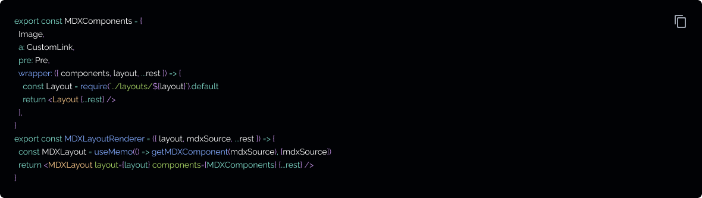
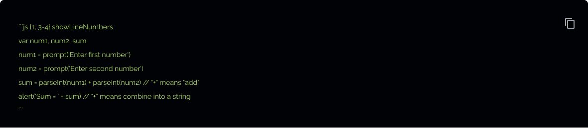

New features in v1
Overview
A post on the new features introduced in v1.0. New features:
First load JS decreased from 43kB to 39kB despite all the new features added! 1
See upgrade guide below if you are migrating from v0 version of the template.
Theme colors
You can easily modify the theme color by changing the primary attribute in the tailwind config file:
The primary color attribute should be assigned an object with keys from 50, 100, 200 ... 900 and the corresponding color code values.
Tailwind includes great default color palettes that can be used for theming your own website. Check out customizing colors documentation page for the full range of options.
Migrating from v1? You can revert to the previous theme by setting ‘primary’ to ‘colors.sky’ (Tailwind 2.2.2 and above, otherwise ‘colors.lightBlue’) and changing gray to ‘colors.gray’.
From v1.1.2+, you can also customize the style of your code blocks easily by modifying the ‘css/prism.css’ stylesheet. Token classnames are compatible with prismjs so you can copy and adapt token styles from a prismjs stylesheet e.g. prism themes.
Xdm MDX compiler
We switched the MDX bundler from next-mdx-remote to mdx-bundler. This uses xdm under the hood, the latest micromark 3 and remark, rehype libraries.
If you were using custom remark or rehype libraries, please upgrade to micromark 3 compatible ones. If you are upgrading, please delete node_modules and package-lock.json to avoid having past dependencies related issues.
xdm contains multiple improvements over @mdx-js/mdx, the compiler used internally by next-mdx-remote, but there might be some breaking behaviour changes. Please check your markdown output to verify.
Some new possibilities include loading components directly in the mdx file using the import syntax and including js code which could be compiled and bundled at the build step.
For example, the following jsx snippet can be used directly in an MDX file to render the page title component:
The default configuration resolves all components relative to the ‘components’ directory.
Note:Components which require external image loaders also require additional esbuild configuration. Components which are dependent on global application state on lifecycle like the Nextj ‘Link’ component would also not work with this setup as each mdx file is built independently. For such cases, it is better to use component substitution.
Table of contents component
Inspired by Docusaurus and Gatsby's gatsby-remark-table-of-contents, the ‘toc’ variable containing all the top level headings of the document is passed to the MDX file and can be styled accordingly. To make generating a table of contents (TOC) simple, you can use the existing ‘TOCInline’ component.
For example, the TOC in this post was generated with the following code:

You can customise the headings that are displayed by configuring the ‘fromHeading’ and ‘toHeading’ props, or exclude particular headings by passing a string or a string array to the ‘exclude’ prop. By default, all headings that are of depth 3 or smaller are indented. This can be configured by changing the ‘indentDepth’ property. A ‘asDisclosure’ prop can be used to render the TOC within an expandable disclosure element. Here's the full TOC rendered in a disclosure element.
Here's the full TOC rendered in a disclosure element.
Layouts
You can map mdx blog content to layout components by configuring the frontmatter field. For example,
this post is written with the
new ‘PostSimple’ layout!
Adding new templates
layout templates are stored in the ‘./layouts’ folder. You can add
your React components that you want to map to markdown content in
this folder. The component file name must match that specified in the markdown frontmatter
‘layout’ field.
The only required field is ‘children’ which contains the rendered
MDX content, though you would probably want to pass in the
frontMatter contents and render it in the template.
You can configure the template to take in other fields - see ‘PostLayout’ component for an example.
Here's an example layout which you can further customise:
Configuring a blog post frontmatter
Use the layout frontmatter field to specify the template you want to map the markdown post to. Here's how the frontmatter of this post looks like:
You can configure the default layout in the respective page section by modifying the
‘DEFAULT_LAYOUT’ variable.
‘The DEFAULT_LAYOUT’
for blog posts page is set to ‘PostLayout’.
Extend
‘layout’ is mapped to wrapper which wraps the entire MDX content.

Use the “MDXLayoutRenderer” component on a page where you want to
accept a layout name to map to the desired layout. You need
to pass the layout name from the layout folder (it has to be an exact match)
Analytics
The template now supports
plausible, simple analytics and
google analytics. Configure ‘siteMetadata.js’ with the settings
that
correspond with the desired analytics provider.
Custom events are also supported. You can import the
‘logEvent’ function from .
‘@components/analytics/[ANALYTICS-PROVIDER]’ file
and call it when triggering certain events of interest. Note: Additional configuration might be required
depending on the analytics
provider, please check their official documentation for more information.
Blog comments system
We have also added support for
giscus, utterancesor disqus. To
enable, simply configure ‘siteMetadata.js’ comments property
with the
desired provider and settings as specified in the config file.
Multiple authors
Information on authors is now split from siteMetadata.js and stored in its own data/authors folder as a markdown file. Minimally, you will need to have a default.md file with authorship information. You can create additional files as required and the file name will be used as the reference to the author.
Here's how an author markdown file might look like:
You can use this information in multiple places across the template. For example in the about section of the page, we grab the default author information with this line of code:
This is rendered in the . ‘AuthorLayout’ template.
Multiple authors in blog post
You can use this information in multiple places across the template. For example in the about section of the page, we grab the default author information with this line of code:
This is rendered in the . ‘AuthorLayout’ template.
A demo of a multiple authors post is shown in Introducing Tailwind Nextjs Starter Blog post.
Copy button for code blocks
You can use this information in multiple places across the template. For example in the about section of the page, we grab the default author information with this line of code:
Line highlighting and line numbers
Line highlighting and line numbers are now supported out of the box thanks to the new rehype-prism-plus plugin
The following javascript code block:
will appear as:
will appear as:
To modify the styles, change the following class selectors in the ‘prism.css’ file:
Newletter component (v1.1.3)
Introduced in v1.1.3, the newsletter component gives you an easy way to build an audience. It integrates with the following providers:
To use it, specify the provider which you are using in the config file and add the necessary environment variables to the ‘.env’file. For more information on the required variables, check out ‘.env.sample.’
Two components are exported, a default ‘Newsletter Form’ and a
‘BlogNewsletterForm’ component, which is also passed in as
an MDX component and can be used in a blog post:
Like what you are reading?
The component relies on nextjs's API routes which requires a server-side instance of nextjs to be setup and is not compatible with a 100% static site export. Users should either self-host or use a compatible platform like Vercel or Netlify which supports this functionality.
A static site compatible alternative is to substitute the route in the newsletter component with a form API endpoint provider.
Bibliography and Citations (v1.2.1)
‘rehype-citation’ plugin is added to the xdm processing pipeline in v1.2.1. This allows you to easily format citations and insert bibliography from an existing bibtex or CSL-json file.
‘rehype-citation’ plugin is added to the xdm processing pipeline in v1.2.1. This allows you to easily format citations and insert bibliography from an existing bibtex or CSL-json file.
‘rehype-citation’ plugin is added to the xdm processing pipeline in v1.2.1. This allows you to easily format citations and insert bibliography from an existing bibtex or CSL-json file.
For example, the following markdown code sample:
- is rendered to the following:
- Standard citation (Nash, 1950)
- In-text citations e.g. Nash (1951)
- Multiple citations (see Nash, 1950, 1951, p. 50)
References:
Nash, J. (1950). Equilibrium points in n-person games. Proceedings of the National Academy of Sciences, 36(1), 48–49.
Nash, J. (1951). Non-cooperative games. Annals of Mathematics, 286–295.
A bibliography will be inserted at the end of the document, but this can be overwritten by specifying a ‘[^Ref]’ tag at the intended location. The plugin uses APA citation formation, but also supports the following CSLs, 'apa', 'vancouver', 'harvard1', 'chicago', 'mla', or a path to a user-specified CSL file.
rehype-citation readmeSelf-hosted font (v1.5.0)
Google font has been replaced with self-hosted font from Fontsource. This gives the following advantages:
Google font has been replaced with self-hosted font from Fontsource. This gives the following advantages:
Google font has been replaced with self-hosted font from Fontsource. This gives the following advantages:
Google font has been replaced with self-hosted font from Fontsource. This gives the following advantages:
Google font has been replaced with self-hosted font from Fontsource. This gives the following advantages:
Google font has been replaced with self-hosted font from Fontsource. This gives the following advantages:
Google font has been replaced with self-hosted font from Fontsource. This gives the following advantages:
Google font has been replaced with self-hosted font from Fontsource. This gives the following advantages:
Google font has been replaced with self-hosted font from Fontsource. This gives the following advantages:
This leads to a smaller font bundle and a 0.1s faster load time (webpagetest comparison).
Upgrade guide
There are significant portions of the code that has been changed from v0 to v1 including support for layouts and a new mdx engine.
There's also no real reason to change if the previous one serves your needs and it might be easier to copy the component changes you are interested in to your existing blog rather than migrating everything over.
Nonetheless, if you want to do so and have not changed much of the template, you could clone the new version and copy over the blog post over to the new template.
Another alternative would be to pull the latest template version with the following code:
You can see an example of such a migration in this commit for my personal blog.
v1 also uses ‘feed.xml’ rather than ‘index.xml’ , to avoid some build issues with Vercel. If you are migrating you should add a redirect to ‘next.config.js’ like so:
With the new changes in Nextjs 12, first load JS increase to 45kB. ↩
- Tails azimuth
- .
- © 2024
- .
- Next.js Starter Blog
Tailwind Nextjs Theme